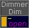
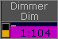
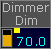
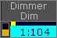
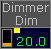
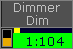
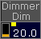
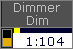

The cue colors are value and background colors for the selected executors.
The cue colors are visible in the:
There are four cue colors available:
Magenta:
 
Magenta Value - Magenta Background
Magenta values or backgrounds indicates a tracked value from a selected executor.
Cyan:
 
Cyan Value - Cyan Background
Cyan values or backgrounds indicates altered values in the cue from a selected executor.
For dimmer attributes, a cyan value indicates an increasing dimmer value.
Green:
 
Green Value - Green Background
Green values or backgrounds indicates a decreasing dimmer value from a selected executor.
White:
 
White Value - White Background
White values or backgrounds indicates the same value is stored a second time (blocked value) from a selected executor.
To change the cue color options in the
tap at the yellow ball  , tap Display and then in the field Cue Colors.
, tap Display and then in the field Cue Colors.
Requirement for layout view:
The layout elements shows dimmer values.
To change the cue color options in the layout view, tap at the yellow ball  , tap Tools and in the field Cue Colors.
, tap Tools and in the field Cue Colors.
To change the cue color options in the DMX sheet, tap at the yellow ball  , tap Display and then in the field Programmer Colors.
, tap Display and then in the field Programmer Colors.
For more information to the colors, see system colors.
The cue color options are changed.
To save the cue color option, save the option as default or save the view.